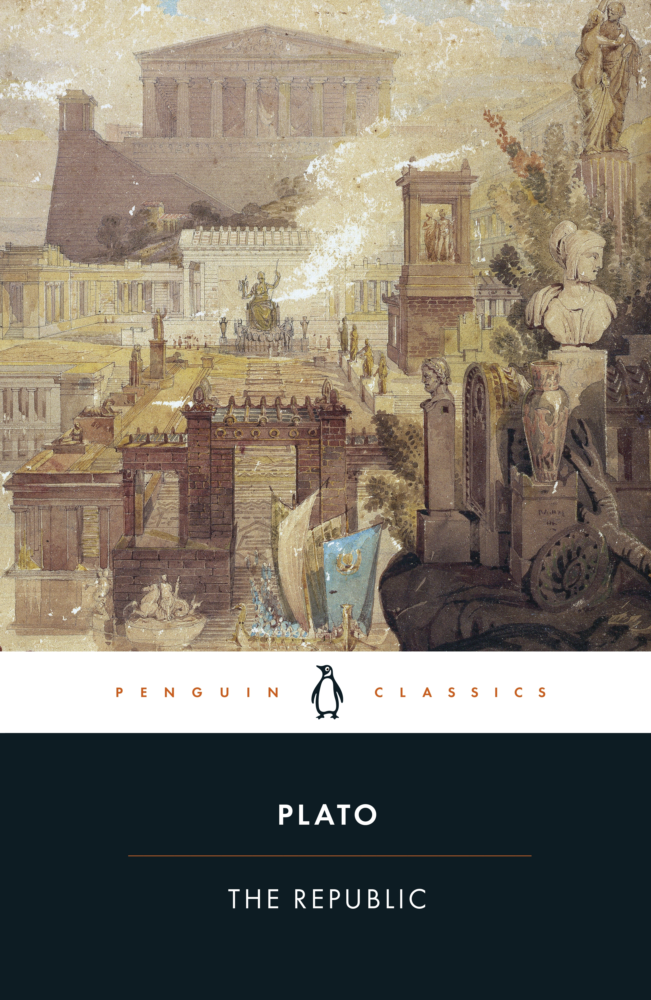
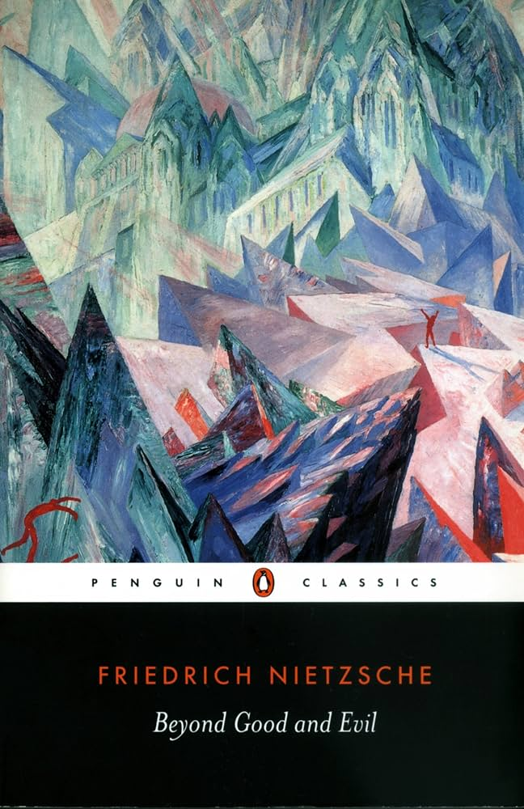
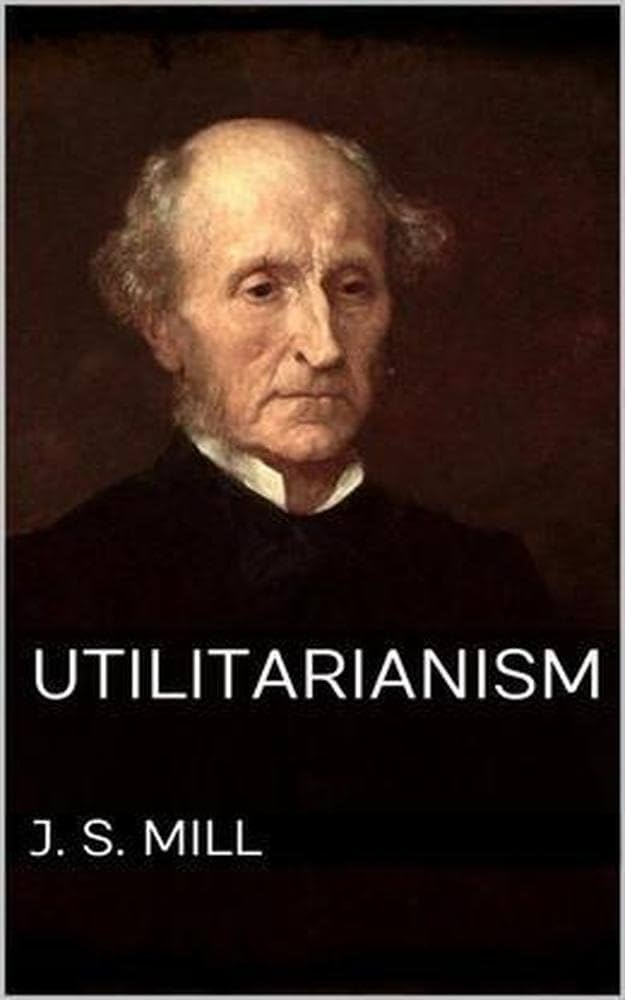
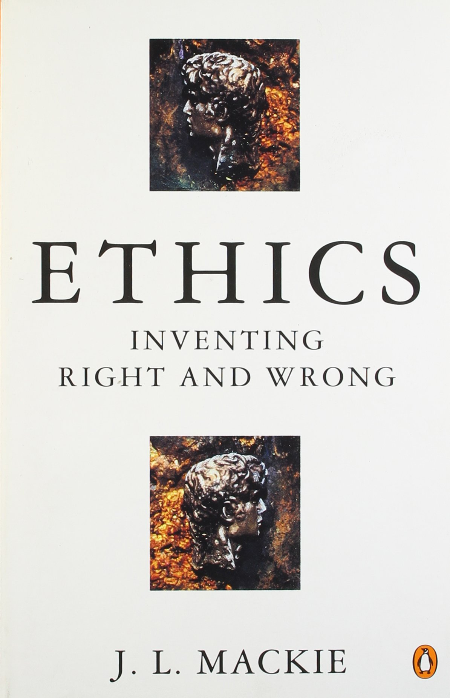
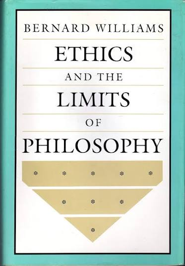

Asgear
| Attribute |
Information |
| Full Name |
Asgear |
| Title(s) |
The Architect of The Continuum, The God Beyond the Order, The Final Heretic |
| Religious Inspiration |
N/A (Secular Philosophy is closest) |
| Divine Nation |
N/A (Mostly Kristiania) |
| Species |
God, Human (temporary) |
| Gender |
Male |
| Status |
Deceased |
| Position |
Architect of The Continuum |
| Associated Artefact |
Omniscient Lattice |
Overview
One of the most consequential, intelligent and powerful figures in The Divine Order. His extraordinary
intelligence, strategic capabilities, and understanding of institutional power, fundamentally and forever
altered the universe.
Unlike the four dominant divine rulers, whose authority was established through influence, military strength,
political alliances, and territorial control, Asgear pursued an entirely different approach to rising to power.
Rather than competing directly with the stablished hierachy, where his opponents had millennias of a head start and
act as strict and aggressive oligopolies, he first understood the systems that sustained it and identified
weaknesses that made its continueed existence possible.
Asgear's rise in his late plan was characterised by long-term preperation, institutional manipulation,
strategic deception, and an unprecedented understanding of the relationship between divine authority and faith.
He eventually defeated all four major divine rulers: Krista, Aman, Bodhi, and Dharman, absorbed their powers,
capabilities, manifested entirely, and reset his universe.
His ultimate goal was not personal supremacy but instead to replace an increasingly dysfunctional civilisation
with a fundamentally improved system.
Appearance
Asgear's appearance remains unchanged across all four forms so that his outward appearance provides
no reliable indicator of which form he's using. This allows for underestimations and overestimations.
Human Form
A casual human.
Base God Form
No appearance change
Enhanced God Form
No appearance change
Ultimate God Form
No appearance change
Personality
He has over 200 personalities. Good luck figuring out which is which.
Background
Asgear was made artificially, outside the conventional norms of summoning. After his creation, he faked his death in order to act independently.
Abilities
"Enhanced" means less limitations and nearing absolute. Limitations typically regard who the ability works against and to what extent it does.
"Absolute" means no limits.
In divine forms, the extent to which his abilities can be used is dependent on the faith system. Therefore, most of the series, Asgear is quite weak against other gods until his crucifixion arc.
Human Form
Absolute peak human with no divinity. Asgear throughout the series sometimes conserves his energy and
faith by resorting to being in his human form and disconnecting himself from his original divine existence.
Asgear's human form possesses no connection to divinity, divine essence, supernatural abilities or
faith-based power. However, he retains his memories, knowledge, personality, reasoning capabilities, and
accumulated experiences to the extent that his human brain can accommodate them. Unlike his divine forms,
which are connected to the Divine realm and possesses a limitless information-processing capacity and memory
storage, his human form is restricted to the biological limits of a human brain. Consequentially, Asgear must
selectively retain information, prioritises memories, knowledge and experiences that he considers important.
- Tier Level of 9-C on VS Battles, meaning peak human
- Physical Stats
- Attack Potency: Peak Human, possessing the maximum theoretical level of human physical strength and
can deliver exceptionally powerful strikes through optimal biomechanics, coordination, and force transfer.
Cannot exceed human biological limitations.
- Speed: Peak Human, possessing the maximum theoretical level of human speed, to the upper limits of human sprinting,
acceleration, reaction, and movement speed. His exceptional coordination allows him to execute movements with
minimal wasted motion. His reactions are stilled constrained by human neural transmission and sensory processing
speeds.
- Lifting Strength: Peak Human, possessing strength at the extreme upper end of human biological potential, through
optimal muscular recruitment and technique. However he cannot lift beyond the limits of human muscle, bone, and connective tissues.
- Striking Strength: Peak Human, through precise timing, coordination, and biomechanical efficiency while staying within human limits.
Kill another human being with a punch.
Break objects made out of metal
Pick up hundreds of kilograms
- Durability: Peak Human, meaning robust physical conditioning and can tolerate physical stress at the upper end of human biological capacity.
His bones, organs, skin, and nervous system remain fundamentally human, meaning no immunity to conventional injuries.
- Stamina: Peak Human, meaning sustained physical activity at the upper limits of human endurance. This includes exceptional
pacing, movement efficiency, and bodily control, allowing minimised unnecessary exertion. He still remains subject to fatigue,
dehydration, oxygen requirements, and other biological restraints.
- Combat Skill: Peak Human, including analysis of opponents, movement pattern recognition and tactical decisions. Still limited by human biology.
- Accelerated Development
- Adaptation
- Enhanced Senses including echolocation
- Martial Arts
- Weapon Mastery
- Stealth Mastery
- Sound Manipulation
- Maximum Biological Control
- Extraordinary camouflage
- Intellectual capabilities
- Supergenius: Possessing intellectual abilities beyond those of an ordinary genius
- Social Influencing
- Photographic memory
- Fear Manipulation
- Peak Data Manipulation
- Peak Human Hacking
- Peak Human Information Analysis
- Limited Madness Manipulation
- Limited Social Influencing
- Human Manipulation
- Direct Manipulation
- Indirect Manipulation
- Emotional Manipulation
- Fear Inducement
- Panic Inducement
- Supernatural Emotional Perception
- Supernatural Emotional Understanding
- Supernatural Emotional Engagement
- Mass Manipulation
- Event Manipulation: Centuries-long orchestrations
- Individual Manipulation
- Psycological Manipulation
- Information Manipulation
- Historical Manipulation
- Political Manipulation: Demonstrated via rebellion of Alel
- Memory Manipulation
- Limited Mind Manipulation
- Limited Morality Manipulation
Base God Form
No appearance change
Tier Level of Low 6-C on VS Battles, meaning island level.
Mostly basic control over matter
- The Omniscient Lattice: Asgear's external cognitive architecture, existing within the Divine realm and requiring
divine form and metaphysical connection to access. It is the "true brain" while his physical brain acts as the
connection and primary interface, communicating with the lattice, requesting information, interpreting its outputs and
directing its computational processes. Despite the Omniscient Lattice being named Omniscient, it is instead nigh-omniscient. Unlike
conventional biological cognition, the Omniscient Lattice does not rely on a single physical organ. It distributes its
cognitive processes throughout an external metaphysical structure, allowing Asgear to process, retain and correlate
information on an effectively infinite scale, including being beyond uncountable infinities. Any system operating under a fixed,
deterministic rule set falls within Asgear's capabilities, provided its governing rules and relevant parameters are sufficiently defined.
- Linguistic Reconstruction: Ability to derive the maximum possible amount of information about an unfamiliar language or communication system through analysis of available evidence. This involves identifying its structure, patterns, syntax, and probable meaning. Certainty can not be guaranteed.
- Limited Cosmic Awareness
- Absolute Data Manipulation
- Supernatural Hacking
- Absolute Information Analysis
- Superhuman Precision
- Creation and Existence
- Limited Creation
- Acasuality: Time Paradox Immunity, meaning immunity to past and standard temporal paradoxes
- Limited Sealing
- Limited Existence Erasure
- Limited Time Manipulation
- Matter and Elemental Manipulation
- Acid Manipulation
- Basic Antimatter Manipulation
- Limited Darkness Manipulation
- Limited Deconstruction
- Limited Matter and Energy Manipulation
- Adhesive Manipulation
- Cloth Manipulation
- Limited Density Manipulation
- Limited Duplication
- Limited Explosion Manipulation
- Limited Energy Projection
- Limited Fissionism: Splitting targets
- Limited Fragrance Manipulation
- Limited Size Manipulation
- Limited Light Manipulation
- Limited Magma Manipulation
- Limited Metal Manipulation
- Limited Poison Manipulation
- Limited Plasma Manipulation
- Limited Elemental Manipulation
- Limited Earth Manipulation
- Limited Water Manipulation/Hydrokinesis: Includes ice
- Absolute Fire Manipulation/Pyrokinesis
- Limited Air Manipulation
- Air shield
- Create of tornadoes, or devastating wind storms
- Life, Death, and Biological Manipulation
- Limited Biological Manipulation of Non-conscious species (meaning no humans)
- Limited Blood Manipulation
- Limited Death Manipulation
- Very Limited Petrification: Doesn't apply to humans or above
- Limited Healing
- Limited Regeneration, Resistance, and Restoration
- Support, Status Effects, and Mobility
- Flight
- Levitation
- Gliding
- Limited Attack Reflection
- Limited Battle Field Removal
- Limited Forcefield
- Limited Immobilisation and Restraint
Enhanced God Form
Rather than a sudden switch from the Base form to Enhanced form, this is a gradual transition smeared across time.
Note that most of Asgear's abilities in enhanced form are the abilities he absorbs from other gods. That's why he's nicknamed "thief".
Start: Tier Level of 6-B on VS Battles, meaning country level.
End: Tier Level of 3-B on VS Battles, meaning multi-galaxy level.
- The Omniscient Lattice
- Enhanced Cosmic Awareness
- Alternate Future Display
- Absorption with complete transfer of the victims stats, abilities and powers to Asgear. This includes biological, soul, energy, and power absorption.
- Creation and Existence
- Enhanced Creation
- Acasuality: Temporal Singularity, meaning immunity to all past changes and future manipulation
- Enhanced Existence Erasure
- Avatar Creation: Creating copies is however countered by top-tier gods typically
- Limited Chaos Manipulation
- Enhanced Time Manipulation
- Matter and Elemental Manipulation
- Limited Absolute Zero Inducement: Ability to make substances or organisms reach absolute zero, where enthalpy and entropy hit their minimum level.
- Limited Age Manipulation
- Black Hole Creation
- Enhanced Darkness Manipulation
- Enhanced Deconstruction
- Enhanced Duplication
- Enhanced Matter and Energy Manipulation
- Enhanced Crystal Manipulation
- Enhanced Density Manipulation
- Enhanced Electricity Manipulation
- Enhanced Explosion Manipulation
- Enhanced Fissionism: Splitting targets
- Enhanced Fragrance Manipulation
- Enhanced Size Manipulation
- Enhanced Light Manipulation
- Enhanced Magma Manipulation
- Enhanced Metal Manipulation
- Enhanced Poison Manipulation
- Enhanced Plasma Manipulation
- Enhanced Elemental Manipulation
- Enhanced Air Manipulation
- Enhanced Earth Manipulation/Geokinesis
- Enhanced Water Manipulation/Hydrokinesis: Includes ice
- Life, Death, and Biological Manipulation
- Biological Manipulation
- Enhanced Biological Manipulation of Non-conscious species (meaning no humans): Includes manipulation of cells/genetic level
- Limited Biological Manipulation of humans
- Enhanced Bone Manipulation
- Enhanced Disease Manipulation
- Animal Manipulation including summoning, management and control
- Enhanced Blood Manipulation
- Enhanced Death Manipulation
- Enhanced Healing
- Enhanced Petrification
- Enhanced Regeneration, Resistance, and Restoration
- Support, Status Effects, and Mobility
- Afterimage Creation: Leaving faint silhouettes
- Enhanced Attack Reflection
- Enhanced Battle Field Removal
- Forcefield: Asgear does not need this
- Enhanced Immobilisation
- Illusion Creation
- Invisibility
- Enhanced Restraint
- Limited Perception Manipulation
- Enhanced Sealing
- Body Modification
- Additional Limbs (One off joke)
- Bodily Weaponry: Entirely possible to do but never used
Ultimate God Form
This form is achieved at the very end of the series, very briefly and as a sign of the mission being over.
Technically Aman, Krista, and Dharman could reach this status if every other god was eliminated because then the faith system would be a monopoly for them, but they never win the war fully.
Tier Level of Low 2-C on VS Battles, meaning Universe level+
- The Omniscient Lattice
- Nigh-Omniscience
- Absolute Cosmic Awareness
- Creation and Existence
- Nigh-Omnipotence
- Absolute Creation
- Absolute Existence Erasure
- Absolute Universal Manipulation: From quarks to the entire universe, beyond the observable universe
- Acausality: Survives and is able to control a level of irregular causality
- Limited Causality Manipulation
- Absolute Time Manipulation
- Limited Conceptual Manipulation
- Enhanced Chaos Manipulation
- Matter and Elemental Manipulation
- Absolute Age Manipulation
- Absolute Matter and Energy Manipulation
- Absolute Energy Manipulation
- Absolute Antimatter Manipulation
- Absolute Quark Manipulation
- Absolute Atom Manipulation
- Absolute Molecular Manipulation
- Absolute Absolute Zero Inducement
- Absolute Crystal Manipulation
- Absolute Darkness Manipulation
- Absolute Deconstruction
- Absolute Density Manipulation
- Absolute Duplication of Physical Matter or Energy
- Absolute Electricity Manipulation
- Absolute Explosion Manipulation
- Absolute Fissionism: Splitting targets
- Absolute Fragrance Manipulation
- Absolute Size Manipulation
- Absolute Light Manipulation
- Absolute Magma Manipulation
- Absolute Metal Manipulation
- Absolute Poison Manipulation
- Absolute Plasma Manipulation
- Absolute Elemental Manipulation
- Absolute Earth Manipulation
- Absolute Water Manipulation/Hydrokinesis: Includes ice
- Absolute Air Manipulation
- Air Mimicry: Transforming into a body made of air
- Life, Death, and Biological Manipulation
- Deathless Immortality
- Absolute Biological Manipulation: Includes rewriting of biological laws and rules
- Absolute Blood Manipulation
- Absolute Disease Manipulation
- Absolute Petrification
- Absolute Healing
- Absolute Regeneration, Resistance, Restoration and Resurrection
- Support, Status Effects, and Mobility
- Intangibility: Untouchable and non-physical
- Body Puppetry: Controlling other people's bodies
- Durability Negation
- Enhanced Perception Manipulation
- Absolute Attack Reflection
- Absolute Battle Field Removal
- Absolute Forcefield: Asgear does not need this
- Absolute Immobilisation and Restraint
- Absolute Sealing
Relationships
Quotes
All actions are selfish. It's just that some actions benefit others.
Name me a single action that has been immoral across every single civilisation.
You believe yourself to be right when everyone else is wrong?
As humans, you see other lifeforms as inferior to you. What do you think the divine rulers think of you then?
Trivia
Gallery
Personality
Okay he's a very nice person!
Philosophy
| Name |
Image |
| The Republic by Plato |
 |
| A Treatise of Human Nature by David Hume |
|
| Beyond Good and Evil by Friedrich Nietzsche |
 |
| On the Genealogy of Morality by Friedrich Nietzsche |
|
| Utilitarianism by John Stuart Mill |
 |
| Ethics: Inventing Right and Wrong by John Leslie Mackie |
 |
| Ethics and the Limits of Philosophy by Bernard Williams |
 |